Data Collection & Analysis (Round 1)
Background
TBA
Data Analysis
50% Glycerol, 50% Water
Sample 1:
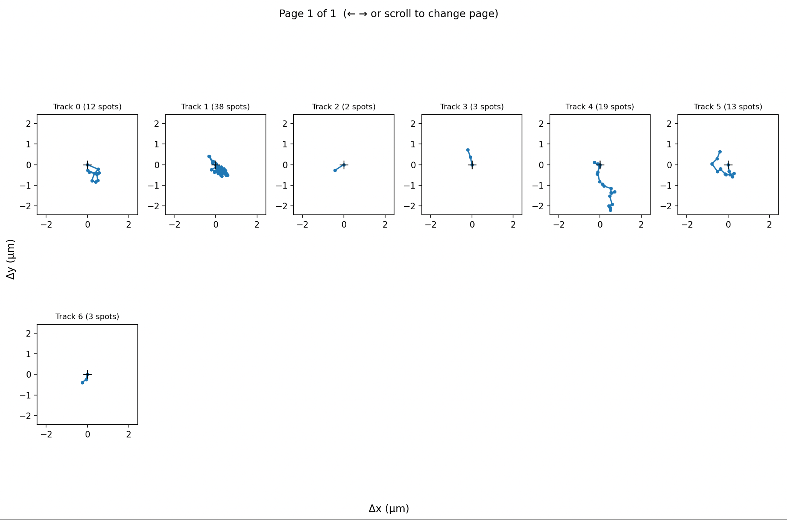
- Tracks 4 and 5 can be analyzed to extract the diffusion because they are sufficiently long and look like actual examples of diffusion.
- Tracks 0 and 1 have several spots but the particle appears to be stuck in one place, so they may not give accurate answers.
- Tracks 2, 3, and 6 are too short to analyze (each only has 2-3 spots).
D for Track 4: 0.6640889548778229
D for Track 5: 0.37226608842527703
Viscosity for Track 4: 0.005008242316297389
Viscosity for Track 5: 0.008934250282301536
Sample 2:
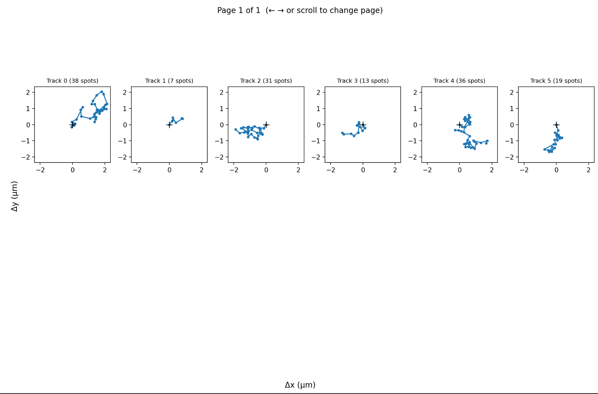
All these tracks look sufficient to analyze.
D for Track 0: 0.5010359303872193
D for Track 1: 0.4794805787725868
D for Track 2: 0.44247710610356833
D for Track 3: 0.4293978350887286
D for Track 4: 0.44247710610356833
D for Track 5: 0.4293978350887286
Viscosity for Track 0: 0.006638083626127223
Viscosity for Track 1: 0.006936502859237333
Viscosity for Track 2: 0.007516588677079124
Viscosity for Track 3: 0.0077455406940222914
Viscosity for Track 4: 0.007516588677079124
Viscosity for Track 5: 0.0077455406940222914
Sample 3:
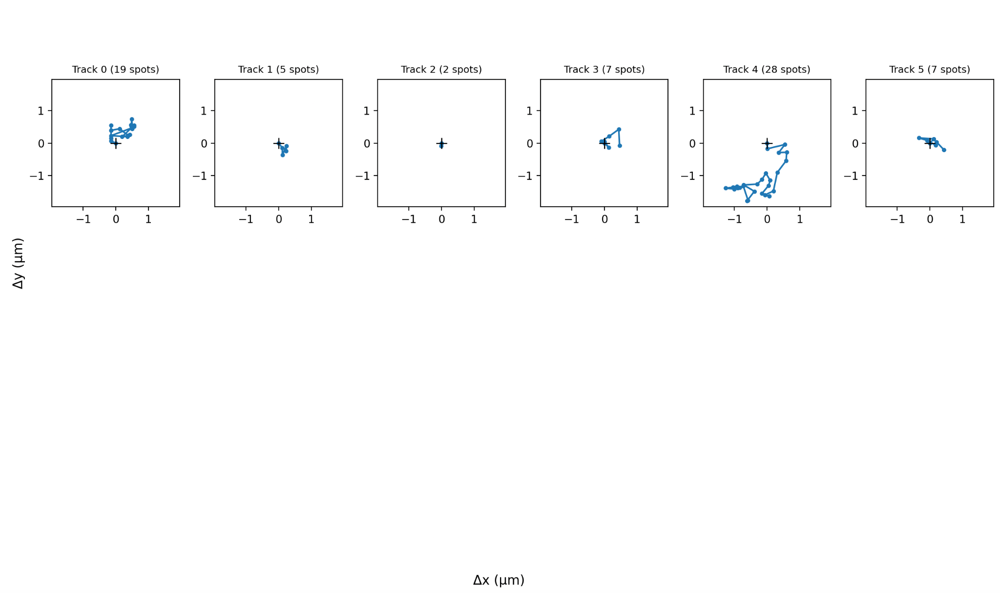
- Tracks 0 and 5 look like they are stuck.
- Tracks 1, 2, and 3 are too short.
- Track 4 is sufficient.
D for Track 4: 0.5467929864639351
Viscosity for Track 4: 0.006082591561960694
Water
The water samples have a lot more trackable particles—there are 100+ particles to track. So I won’t paste the image of all of them. Just the ones I actually tracked.
Sample 1:
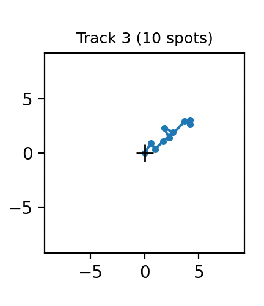
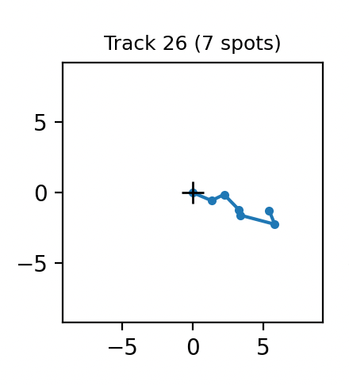
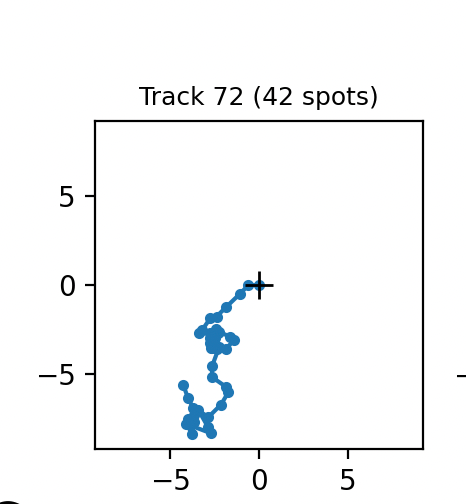
D for Track 3: 5.395911911397534
D for Track 26: 25.394110276114358
D for Track 72: 3.0203267539411716
Viscosity for Track 3: 0.0006163774465219932
Viscosity for Track 26: 0.00013097203916347369
Viscosity for Track 72: 0.0011011783414707984
Sample 2:
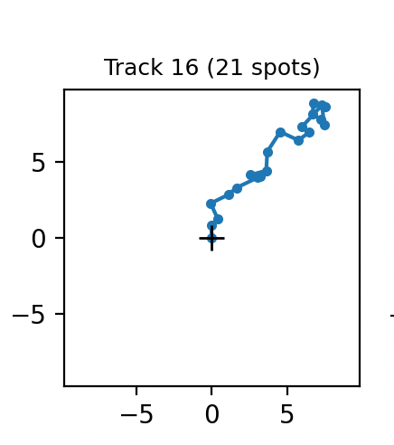
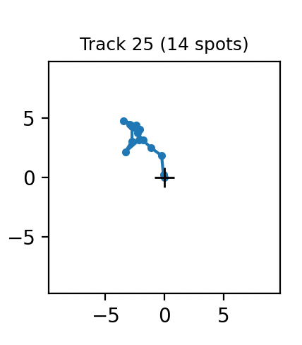
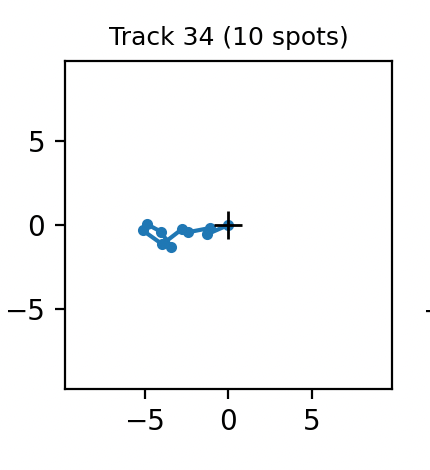
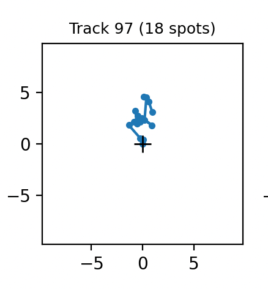
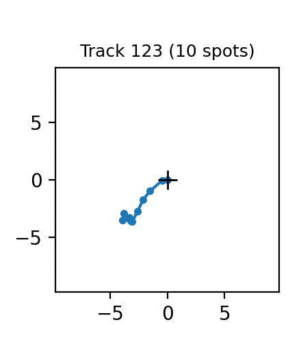
D for Track 16: 9.946249875202108
D for Track 25: 7.76387005263568
D for Track 34: 8.774279580616517
D for Track 97: 1.2169442616242827
D for Track 123: 11.344726300449052
Viscosity for Track 16: 0.00033438918661162604
Viscosity for Track 25: 0.00042838408977179327
Viscosity for Track 34: 0.00037905316043862914
Viscosity for Track 97: 0.0027330080024911265
Viscosity for Track 123: 0.00029316867745616496
Sample 3:
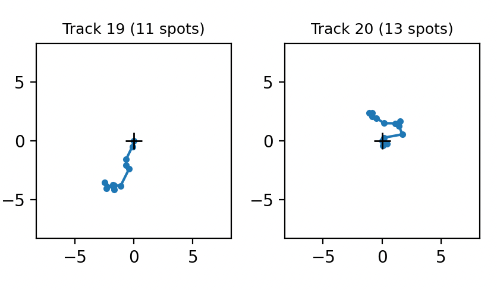
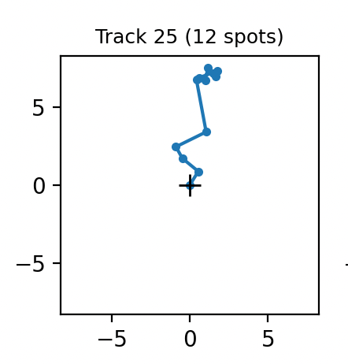
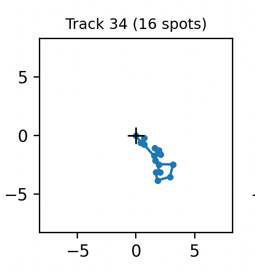
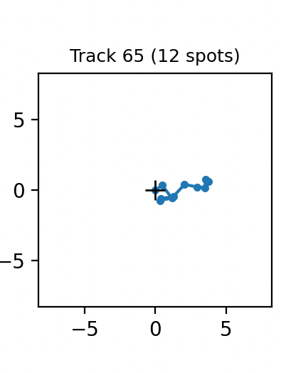
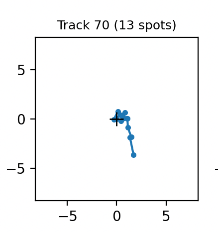
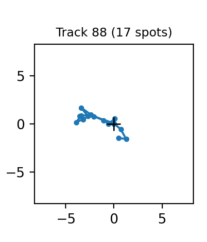
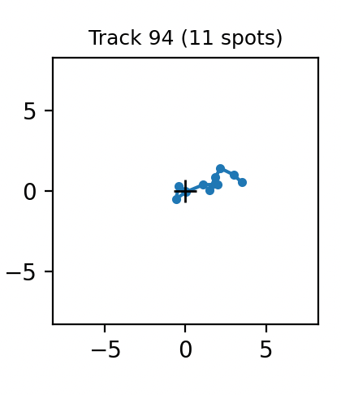
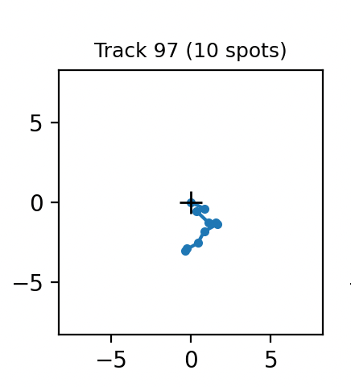
D for Track 19: 7.1746493489719345
D for Track 20: 4.55584326050239
D for Track 25: 20.766323398978134
D for Track 34: 5.75344742755983
D for Track 65: 5.300706703025319
D for Track 70: 3.494456059652799
D for Track 88: 9.32142893229523
D for Track 94: 3.9575589808034337
D for Track 97: 3.9704984278994893
Viscosity for Track 19: 0.0004635652899303567
Viscosity for Track 20: 0.000730033544928861
Viscosity for Track 25: 0.00016015923193069798
Viscosity for Track 34: 0.0005780740064944712
Viscosity for Track 65: 0.0006274481105899689
Viscosity for Track 70: 0.0009517699890423791
Viscosity for Track 88: 0.00035680349330152256
Viscosity for Track 94: 0.0008403964215663103
Viscosity for Track 97: 0.0008376576558334841
Scatter Plots
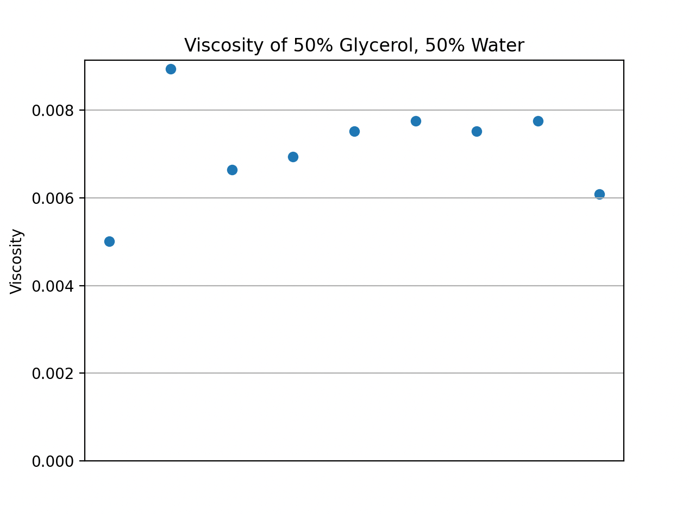
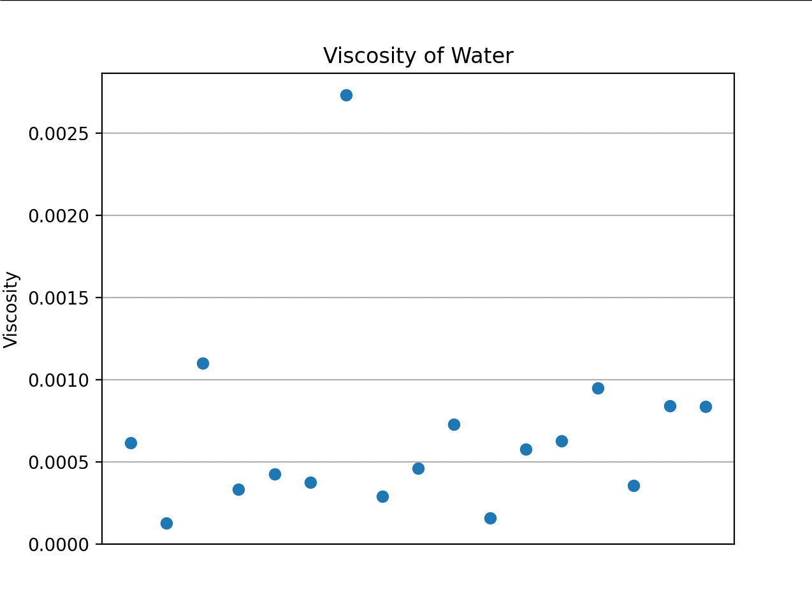